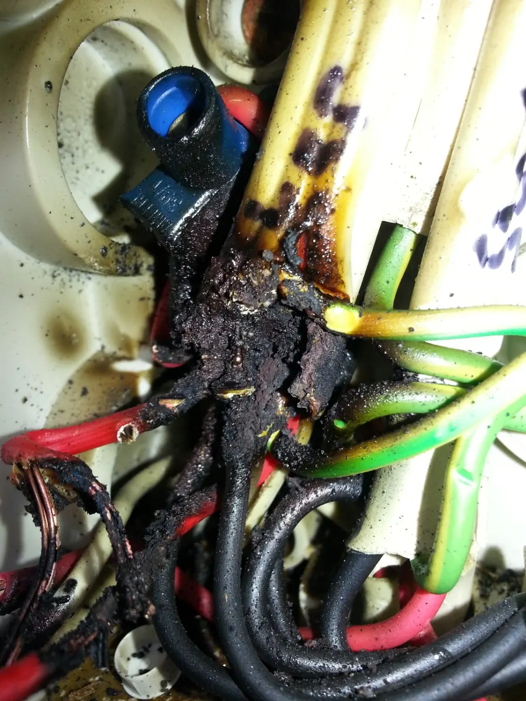

Electrician Brunswick Heads
Electrical repairs, switchboard assessments, lighting, power, fans and planned upgrades for Brunswick Heads homes, businesses and nearby properties.
Urgent electrical danger or serious power loss? Call for a 24/7 emergency electrical call-out. Attendance is subject to location, fault type and availability.
Practical electrical help, from faults to planned work.
Brunswick Heads combines coastal exposure, existing homes, shopfronts and visitor accommodation. Electrical decisions should match the individual property's condition, usage and environment—not assumptions based on postcode.
Call directly.
Sparking, burning smell, significant damage or dangerous loss of supply should be assessed urgently. For fire or immediate danger, contact emergency services on 000.
Call 0424 157 002 → Unknown causeStart with diagnosis.
Repeated trips, dead outlets or intermittent problems need a methodical fault-finding visit before the repair can be priced reliably.
Fault finding & repairs → Defined workDescribe the scope.
Power, lighting, ceiling fans, switchboards and renovations can begin with your suburb, a brief description and safe photos.
Prepare your enquiry →Electrical services for Brunswick Heads properties.
Choose the specialist service for more detail. These are real service categories rather than separate near-duplicate suburb pages.
Fault finding & electrical repairs
Repeated trips, dead circuits and intermittent electrical problems: diagnose the cause before deciding the repair.
View service details →Switchboard upgrades
Review circuit protection, old fuse equipment, board condition and capacity for extensions or new loads.
View service details →Lighting, power & ceiling fans
Improve everyday electrical use with practical indoor or outdoor lighting, outlets, fans and controls.
View service details →Residential electrical
Repairs, home changes, additional circuits and renovations organised around the existing installation.
View service details →Commercial electrical
Help with failed fittings, maintenance and planned electrical work at local business premises.
View service details →Renovations & upgrades
Consider switches, lights, appliances, protection and new circuits together before renovation work proceeds.
View service details →What to think about in Brunswick Heads.
Useful topics to raise when describing your job. These are assessment considerations, not claims that every local property has the same problem.
Salt air and outdoor equipment
Outdoor fittings, junctions and enclosures may need particular attention to weather exposure and suitable protection. Conditions are checked at the site, not assumed.
Lighting, power and fans
Upgrade living spaces, outdoor lighting, kitchen power and ceiling fans with attention to access, controls and safe electrical capacity.
Existing homes and upgrades
Older circuits and switchboards should be assessed when planning renovations or adding significant new electrical loads.
Businesses and accommodation
For faults or planned improvements, describe affected equipment, access windows and any booking or trading constraints. Scope is confirmed for each job.
Genuine electrical work, not stock photography.
These are real Berryman Electrical job photographs illustrating the kind of work we do. The precise job suburbs have not been independently confirmed, so we do not present them as Brunswick Heads case studies.



From first call to a clear next step.
Tell us what's needed
Share the Brunswick Heads property location, urgency, symptoms or intended electrical changes.
Decide the right visit
An unknown fault may need diagnostic attendance; a planned job may need photos or a site inspection.
Agree the scope
Discuss the findings, work involved, current availability and the applicable charging or quote arrangements.
Complete safely
Undertake agreed electrical work, appropriate testing and required documentation for the scope.
Emergency electrician Brunswick Heads: Urgent faults around coastal homes, shops and accommodation.
For a Brunswick Heads shop, holiday property or home with a burning smell, repeated circuit trips or dangerous damage, describe the symptoms by phone. Coastal exposure and moisture may be relevant, but a site inspection is needed to establish the cause.
We take 24/7 emergency call-out enquiries for Brunswick Heads. Actual dispatch is subject to workload, site conditions and availability; we will explain the next step and any applicable charges before arranging attendance.
Need to act now?
If there is fire or immediate danger, move clear and call 000. Do not touch fallen wires, damaged electrical fittings or equipment exposed to water.
For other urgent electrical faults, call Berryman Electrical directly. Emergency attendance depends on availability, fault type and location.
Electrician Brunswick Heads FAQs.
Do you service Brunswick Heads for residential electrical work?
Yes. Berryman Electrical provides fault finding, power, lighting, switchboard assessments and other electrical work for homes in Brunswick Heads, depending on scope and availability.
Can you help with coastal outdoor lighting or power?
Yes. We can assess the proposed location, environmental exposure, existing circuits and protection before selecting suitable outdoor fittings and installation methods.
Do you work on shops and accommodation properties?
We take enquiries for commercial and accommodation-related electrical work, including faults, maintenance and planned improvements. Share the access arrangements or trading constraints so the job can be scoped.
Can you investigate a circuit that trips after rain?
Yes. Moisture-related symptoms need proper inspection and testing. Do not open electrical equipment or repeatedly reset protective devices while the cause is unknown.
Can you assess an older switchboard?
Yes. We assess the board's condition, protection, organisation and ability to accommodate proposed work before recommending a repair or upgrade.
Are 24/7 emergency call-outs available in Brunswick Heads?
Urgent electrical call-outs are offered 24/7, subject to fault type, workload and location. Call 0424 157 002 for an urgent assessment; for fire or immediate danger call 000.
Electrical services in Brunswick Heads and nearby coastal towns.
We take enquiries for Brunswick Heads, Ocean Shores, New Brighton and South Golden Beach, along with nearby Byron Shire areas. Attendance depends on the job and current availability.
Describe the job, not a guessed solution.
Tell us what isn't working or what you want installed. We can discuss the appropriate next step for the property.